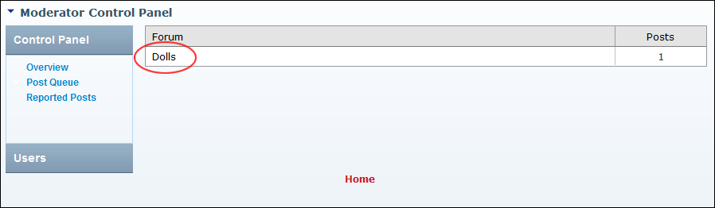
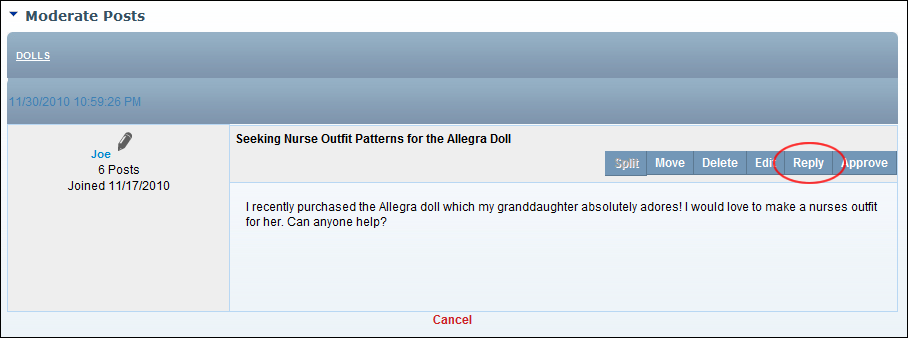

Approving and Replying to a Post
How to approve a post and add reply to the post.
- Go to the moderator post queue. See "Navigating to the Moderator Post Queue"

- In the Forum column, click on a [Forum Name] link to view posts requiring moderation in that forum.

- Click the Reply link beside the required post. This opens the Add/Edit Post page.
- Enter your reply in the Editor.
- Optional. Add/set one or more of these settings:
- At Attachments, modify the attachments if required.
- At Pinned, to set this post to always appear at the top of the related forum group.
- At Notification, if you wish to be notified of replies to this post.
- At Locked, to disable replies to this post.
- Optional. Click the Preview link to preview the edited post.
- Click the Submit link.

Approving a Moderated Post and adding a Reply